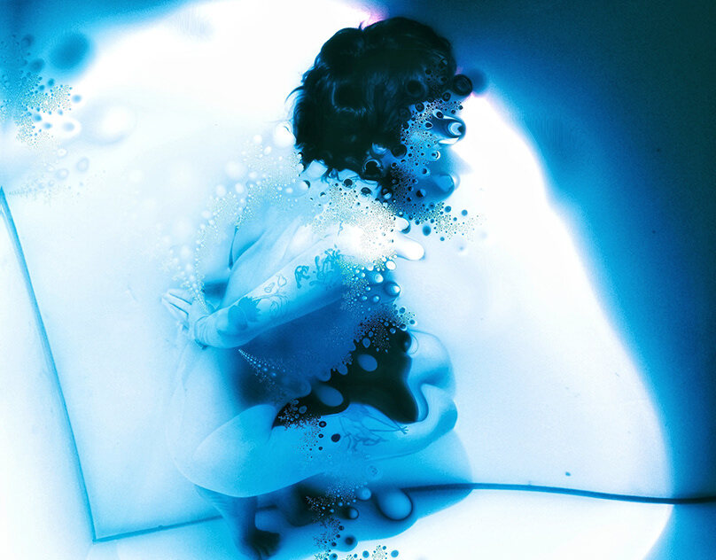
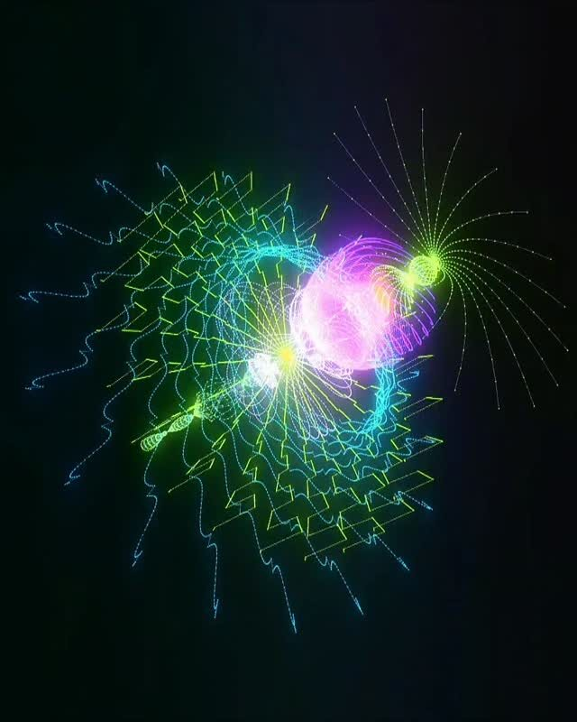
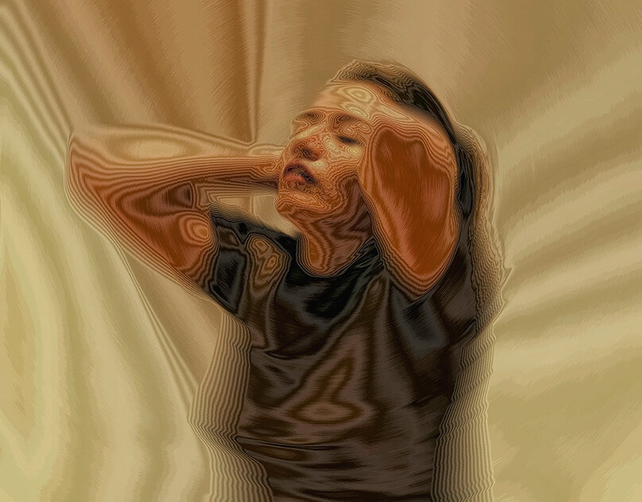
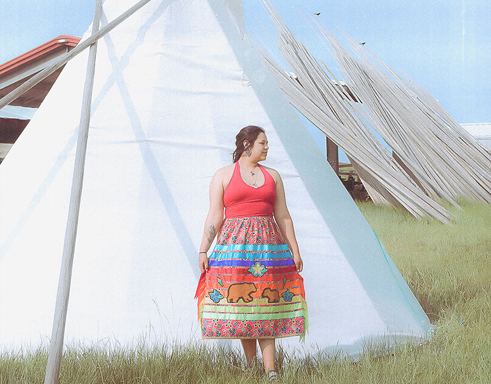
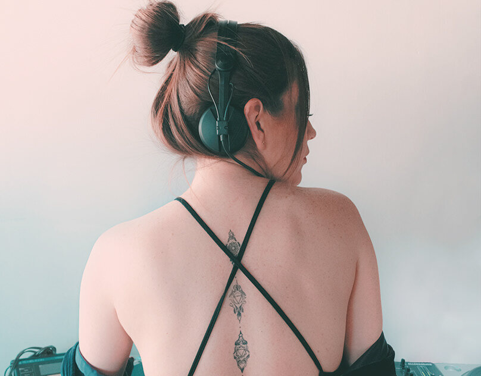

colección — 2026
Desplázate despacio. Las gotas no se mueven contigo — pero lo que reflejan, sí. En su piel curva pasa un mundo, lento, como un paisaje visto desde un tren.
Scroll slowly and watch the beads. They stay where they are, fixed on the glass, but the thing each one reflects keeps changing — not switching, never a hard cut, just drifting. Three faint images live on every droplet at once, each sliding at its own depth, so the reflection has parallax: a near surface, a middle, and something far behind it that you only half-see.
As the page travels under them, the near layer slips one way, the deep layer the other, and slowly the composite reorganizes into a different scene — a different one of her works rising into the bead while another sinks out of it. There is a faint exposure and hue drift on top, the way a real reflection warms and cools as the light around it moves.
You are not meant to catch it happening. You are meant to look up after a while of reading and feel, vaguely, that the droplets are alive — that they have been quietly reflecting a world moving past you the whole time.


More text below the strip, so a bead resting near the seam reflects a little of the photographs above and the type below at once. Keep scrolling: the further you travel, the further the reflected world has drifted, and the droplet you glanced at near the top is reflecting something quite different by the time you reach here — though you would be hard pressed to say when it changed.
This is the whole idea of memoria líquida: the surface remembers, but loosely, the way water remembers the sky. Nothing is fixed. Everything is a reflection of a reflection, slowly turning over.



One last stretch of page to give the scroll real distance, so the reflected world has somewhere to travel. By now every bead has turned its contents over once or twice. Scroll back up and you will not catch them resetting — they simply drift the other way.